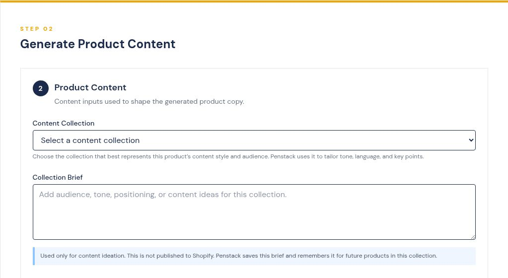

Fetch your product
Paste a Shopify product URL. Penstack pulls in the existing product information, images, and available details so you are not rebuilding context from scratch.
FROM PRODUCT URL TO PUBLISHED
Paste a Shopify product URL. Penstack fetches the product, gives you editable drafts across the full product-content workflow, keeps review in one place, and sends approved content back to your store.

A SIMPLE 4-STEP WORKFLOW
Paste a Shopify product URL. Penstack pulls in the existing product information, images, and available details so you are not rebuilding context from scratch.
Penstack keeps Product Basics, Content Collection and its retained Brief, Product Description, Shopify custom fields, Features & Materials, Care Instructions, image metadata, tags, and collections together. Paid plans can apply your brand voice.
Check, refine, regenerate, and approve everything in one place. You stay in control of the wording, structure, organization, and final product story.
When the product looks right, send the approved content back to Shopify. A product only counts toward usage after a successful publish.
THE WORKFLOW
A simple view of the process without exposing the machinery behind it.
WHAT PENSTACK HANDLES
Penstack is not one isolated generator. It keeps the repetitive middle together from fetched product data through review and publish.
Editable, on-brand first drafts built from the actual product data.
Choose the product’s content context. Penstack retains the private brief for future products in that collection.
A descriptive starting point for every product image that you can quickly refine.
Cleaner, more consistent image naming inside the same workflow.
Use existing values as context or generate a new value when the field needs one.
Assign the product organization while you are already working on the product.
Add target phrases and search intent to the retained Collection Brief so the strategy carries into related product descriptions.
Pull labeled Features & Materials and Care Instructions from the fetched description when they already exist.
With one ten-question quiz, Penstack adopts your voice so drafts start closer to your brand.
Refine, approve, and send completed content back to Shopify when you are ready.
DISCOVERY SUPPORT IN THE WORKFLOW
Penstack keeps product copy, accessible image context, image naming, and organization alongside the product so those details do not become another cleanup project.
Alt text is the clearest example. Sometimes the useful thing is a solid draft that is faster to adjust than starting from nothing.
Penstack handles repetition. You keep the judgment, editing, positioning, strategy, and final approval.
SAME WORK. A BETTER WAY.
Fetch the product, work through the content in one place, and publish when you are satisfied.
Start free →